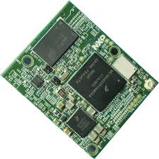
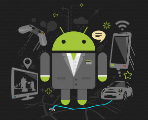

[What is Android][Features][Hardware][Move to bottom]
What is Android

Android is a mobile operating system developed by Google, based on a modified version of the Linux kernel and other open source software and designed primarily for touchscreen mobile devices such as smartphones and tablets. In addition, Google has further developed Android TV for televisions, Android Auto for cars, and Android Wear for wrist watches, each with a specialized user interface. Variants of Android are also used on game consoles, digital cameras, PCs and other electronics. Initially developed by Android Inc., which Google bought in 2005, Android was unveiled in 2007, with the first commercial Android device launched in September 2008. The operating system has since gone through multiple major releases, with the current version being 9 "Pie", released in August 2018.
Features
Interface
Android's default user interface is mainly based on direct manipulation, using touch inputs that loosely correspond to real-world actions, like swiping, tapping, pinching, and reverse pinching to manipulate on-screen objects, along with a virtual keyboard. Game controllers and full-size physical keyboards are supported via Bluetooth or USB. The response to user input is designed to be immediate and provides a fluid touch interface, often using the vibration capabilities of the device to provide haptic feedback to the user. Internal hardware, such as accelerometers, gyroscopes and proximity sensors are used by some applications to respond to additional user actions, for example adjusting the screen from portrait to landscape depending on how the device is oriented or allowing the user to steer a vehicle in a racing game by rotating the device, simulating control of a steering wheel.
Applications
Android has a growing selection of third-party applications, which can be acquired by users by downloading and installing the application's APK (Android application package) file, or by downloading them using an application store program that allows users to install, update, and remove applications from their devices. Google Play Store is the primary application store installed on Android devices that comply with Google's compatibility requirements and license the Google Mobile Services software. Google Play Store allows users to browse, download and update applications published by Google and third-party developers; as of July 2013, there are more than one million applications available for Android in Play Store. As of July 2013, 50 billion applications have been installed. Some carriers offer direct carrier billing for Google Play application purchases, where the cost of the application is added to the user's monthly bill. As of May 2017, there are over one billion active users a month for Gmail, Android, Chrome, Google Play and Maps
Memory Management
Since Android devices are usually battery-powered, Android is designed to manage processes to keep power consumption at a minimum. When an application is not in use the system suspends its operation so that, while available for immediate use rather than closed, it does not use battery power or CPU resources. Android manages the applications stored in memory automatically: when memory is low, the system will begin invisibly and automatically closing inactive processes, starting with those that have been inactive for the longest amount of time. Lifehacker reported in 2011 that third-party task killer applications were doing more harm than good.
Hardware

The main hardware platform for Android is the ARM (ARMv7 and ARMv8-A architectures), with x86, MIPS and MIPS64, and x86-64 architectures also officially supported in later versions of Android. The unofficial Android-x86 project provided support for the x86 architectures ahead of the official support. MIPS architecture was also supported before Google did. Since 2012, Android devices with Intel processors began to appear, including phones and tablets. While gaining support for 64-bit platforms, Android was first made to run on 64-bit x86 and then on ARM64. Since Android 5.0 "Lollipop", 64-bit variants of all platforms are supported in addition to the 32-bit variants.
What is Android Features Hardware Move to bottom
source: wikipedia
https://en.wikipedia.org/wiki/Android_(operating_system)
©2021
©2172033 - Rafael Septian Siahaan